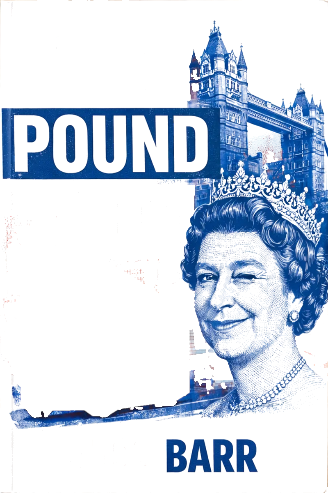
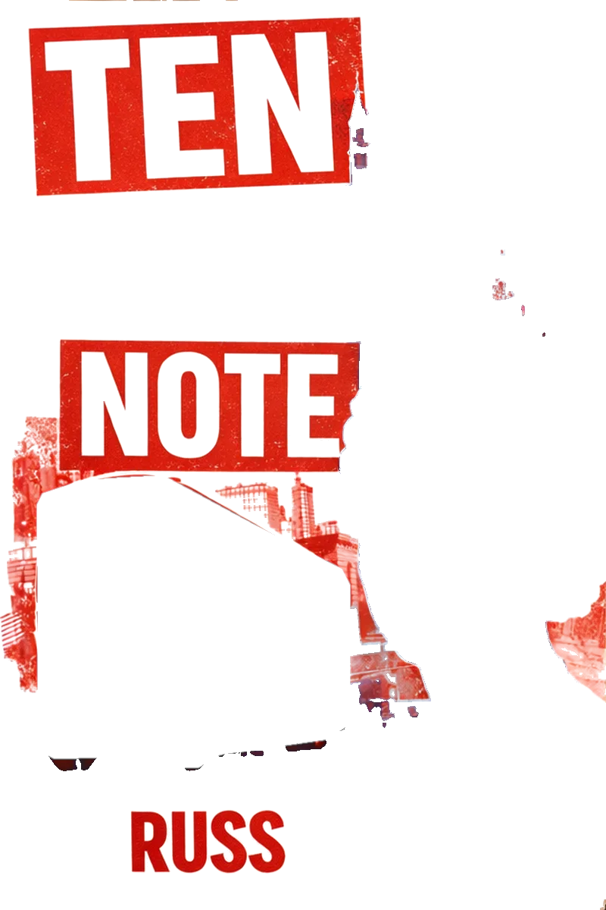
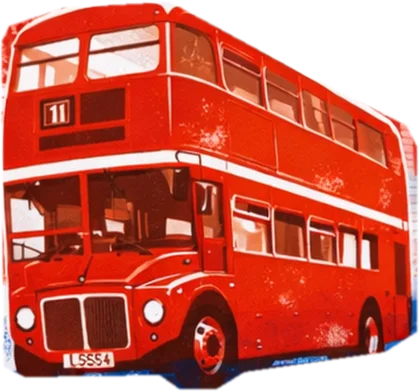
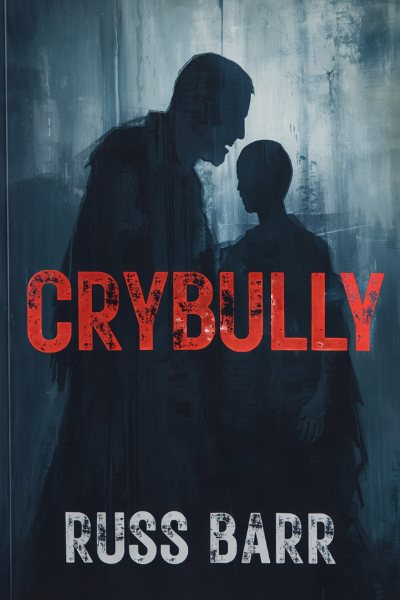

Ten Pound Note, by Russ Barr
Fresh from the mint, a ten-pound note carries one peculiar flaw: the Queen appears to be winking.
London, 1995. One tenner. Twelve lives.
Nobody keepsit for long
Over the course of its journey, the tenner passes through twelve lives: the lost, the lonely, the violent, the damaged and the desperate.
- A child
- A gangster with a secret
- A drug dealer
- A stripper
- A crooked policeman
- A man with nothing left to lose
None of them keep the note for long. But each leaves a mark. What begins as a chain of chance encounters slowly reveals something darker, stranger and more human: a hidden connection between lives that should never have touched, and a path that may yet lead back to redemption.
"Such a simple concept, following a ten pound note as it passes from person to person, but Russ manages to use it to capture both the simplicity of being human and all the incredible complexities that come with it."Bella, Amazon UK
"Nostalgic, funny, tense, with great characters and a very well written story."Harrison James, Goodreads
"A fast paced story with a clever way of showing how closely connected we all are."Sppmcg, Amazon UK
Oxford Indie Book Fair
N66Sunday 22 November 2026, 11:00 to 16:30
Oxford Examination Schools, 75 to 81 High Street. Free entry.
Come and say hello, talk books and pick up a signed copy of Ten Pound Note or War Inc.
At the MK Indie Book Festival in September I ran a spin to win a signed book. It went so well it's coming back, improved.
DirectionsNext: Literary Escape Festival
Saturday 15 May 2027, 10:30 to 14:30, Citygate Church, Bournemouth.
Also by me
-
War Inc.
Political satire, my debut novel
When a violent uprising erupts on the island of Gutan, President Jim Cooper needs a plan. Enter Evan Fletcher, fixer for a shadowy corporate alliance called The Partnership. They can end the war faster and cheaper than any army. All they want in return is exposure: clicks, likes and billions of livestream views.
Get War Inc. -

Crybully
A short story, 2024
Terry and Norman are from the same town, the same street, yet their lives are on very different paths. The school bully and his victim are locked in a lifelong struggle that will be the downfall of one of them. How far can someone be pushed before they fight back?
Get Crybully
Hello, I'm Russ
I write character-led fiction with heart and soul, sometimes dark, sometimes funny, but always trying to scratch beneath the surface of the human condition.
I'm drawn to flawed characters, broken systems and the absurdity that often sits just beneath the surface of serious things.
- Genrespolitical satire, contemporary fiction, speculative fiction
- Themespower, technology, institutions, human fallibility
- Basedin the United Kingdom
From my shelves
Currently reading
The Bone Clocks
by David Mitchell
Latest review
Yellowface
by Rebecca F. Kuang. 2 out of 5. "It all ended up a bit too Scooby Doo."
I'm also a book reviewer: fifty books read so far in 2026, and I write up the highs and lows. Want the first chapter of Ten Pound Note? It comes with occasional book news and picks from my reading pile. No clutter and no constant emails.